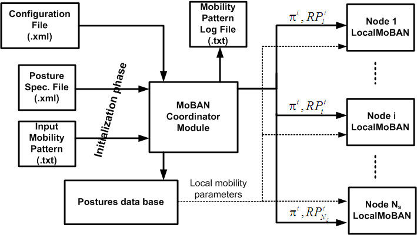

This documentation is released under the Creative Commons license
This documentation is released under the Creative Commons licenseMoBAN is a configurable mobility model for Wireless Body Area Networks (WBANs). This is the implementation of MoBAN on top of MiXiM framework. The model has been specifically designed so that it can be configured for being used for performance evaluation of a broad range of application scenarios including WBANs. Both global movement of the WBAN and the individual node mobility within the WBAN have been taken into consideration. The model can be used in simulating both intra- and extra-WBAN protocols. The Model is constructed based on the RPGM group mobility model. It implements various time and space correlations for selecting the posture of the body and the movement behavior. The structural block diagram of the MoBAN implementation is shown in this figure:

The model implementation consists of two NED modules:
MoBANCoordinator module is the module that coordinates the whole WBAN movement. It decides about the location of the WBAN in the simulation area, the movement behavior, and the WBAN posture at any time. One MoBANCoordinator module should be instantiated for each WBAN that exist in an application. Thos module has two xml parameters which should be assigned to two xml files, a postures definition file and a configuration file. These file can be same for all coordinators in the network. In this case, all WBANs are supposed to have the same posture specifications and statistically same mobility behavior. However, different files can be given as well. More information about input XML files can be found in the following links.
Any WBAN node in the network must use MoBANLocal as its mobility module in the definition of the node. MoBANLocal receives its reference point as well as radius and the speed of its local movement behavior from the MoBANCoordinator module. Actually, this module is responsible to determine the position of the node in the simulation area by combining the relative local movement and the given reference point for global movement.
MoBANLocal module has a parameter named “coordinatorIndex” that determines the index of the belonging coordinator module. A coordinator module looks for all modules in the network with name “node” which their mobility submodule has this parameter. Then if the value of this parameter is the same as the index of that coordinator, the node is assumed to belong to that coordinator.
On the left side you can browse the ned-files documentation.Under the topic "C++" you will find more detailed information on the C++ classes of MoBAN which is a good start for browsing the documentation.
More information about the MoBAN mobility Model can be found here .
To import this project and run existing examples, please visit this page .
Information about using the MoBAN model in a simulation network can be found in this page .
Author: Majid Nabi
Date: February, 2011
Version: V1.0
Electronic Systems group (ES), Eindhoven University of Technology (TU/e), the Netherlands.
Generated by neddoc.
This documentation is released under the Creative Commons license